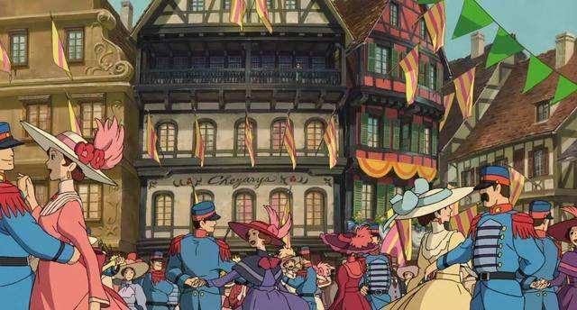

| 哈尔的移动城堡 | ||||
|---|---|---|---|---|
| 首页 | 影片信息 | 剧情简介 | 人物简介 | 影片制作 |
剧情简介

初遇时，她还是那个十八岁的青春少女模样，虽样貌平平，却心善无比。 那一日，苏菲一人走在去看望妹妹的途中，却被两名赖皮士兵拦截，恰巧路过的哈尔解救了受困的苏菲。然而，她却也因此被卷入了哈尔与荒野女巫之间的追逐与被追逐。为了摆脱荒野女巫收下的追踪，他带她穿行高空，竟被她勇敢的步伐吸引，将她带往目的地。与妹妹小叙一别后的当晚，正当她拖着疲惫的身躯回到礼帽店打算作息时，却被突如其来的一名不速之客改变了原来的模样…… |
|---|
再见时，她已然成了一个八十岁老太的模样，为了解除魔法，因缘巧合下上了哈尔的移动城堡。 次日清晨，当苏菲看到镜子中呈现出的自己的模样已然不是年轻时候的自己的模样而确认不是做梦后，为了不让身边人的发现，她孤身一人上山，只为寻得破除这诅咒的方式。途中，她意外遇到被深埋地底的稻草人芜菁。在一阵狂风骤雨中，为了寻找一处躲避的场所，阴差阳错中芜菁帮助她来到了一座神秘的移动城堡。那里，她认识了城堡中的火焰恶魔卡西法、小男孩马鲁克、哈尔…… |
渐渐地，渐渐地，她逐渐走入了他，倾听他内心的声音…… 哈尔是这座城堡的主人，拥有神奇的力量。然而，他厌恶战争，却被召唤。为了和平，他常常孤军奋战至黄昏日落才一身疲惫的回到自己的城堡，并且愈陷愈深……善良的苏菲决心帮助哈尔寻回自己而接受哈尔的提议，假装哈尔的母亲入宫与国王表露自己的想法。然而，宫廷女巫莎莉曼却无意要放过哈尔，甚至要像惩治荒野女巫那般惩治哈尔……危机时刻，苏菲果断萌上哈尔的双眼，告诉他：“这只是假象。”…… |
戒指指引她通往他的童年，见到他与恶魔交换的真相。无论如何，她都要拯救身陷险境的他 苏菲不忍哈尔一人受难，于是决心追寻哈尔，她令卡西法驱使城堡一路追寻哈尔而去，却看到此时的哈尔已经在渐渐流失意识。在哈尔奄奄一息之时，是苏菲破除了哈尔与卡西法之间交换的咒语，也解除了自己变成苍老容颜的咒语，更以自己的一吻破除了施加在卡普身上的咒语，那时大家才恍然大悟，原来稻草人芜菁是邻国王子。摆脱了契约束缚的卡西法原本可以海阔天空自由去飞翔，却因为留恋与苏菲等人一起的时光而想要与他们继续生活在一起，邻国的王子虽然爱上了解救了自己的苏菲，但在看到苏菲与哈尔幸福相拥在一起的时候，表示会回去尽快停止这场无意义的战争…… |